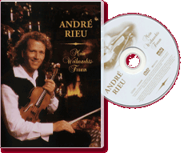

|
Mein Wihnachts Traum (1997) - 75 Minutes
|
 |
|
This Christmas special with its
magical images is certain to get you into the Christmas
spirit. Relax to the sounds of 'Silent Night' and other
well-known Christmas melodies and enjoy dreaming with
André, who shows on this video how he celebrates
Christmas: with music! |
Where to buy?
|
|
DVD Tracklist
- Tochter Zion
- Vom Himmel hoch
- Morgen Kinder, wird's was geben
- Gloria in excelsis Deo
- Ihr Kinderlein kommet
- Il est né;, le divin enfant
- Les Patineurs
- O Tannenbaum
- The Little Drummer Boy
- Guten Abend, gute Nacht
- Jingle Bells
- Ave Maria
- Es ist ein Ros' entsprungen
- Der Winter
- Alle Jahre wieder
- O du fröhliche
- Süsser die glocken nie klingen
- O Jesulein süss
- Last uns froh und munter sein
- White Christmas
- Sleigh Ride
- Abends will ich schlafen gehen
- Leise rieselt der Schnee
- Kling, Glöckchen, kling
- Adeste fideles
- The Holy City
- Caro Mio ben
- Transeamus
- Pastorale
- Petersburger Schlittenfahrt
- Stille Nacht
|
|